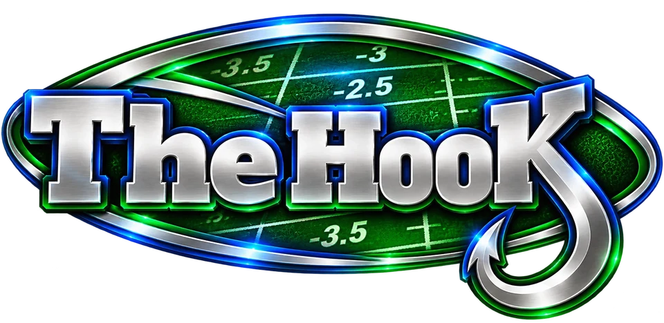

Every game vs. DraftKings' Tuesday line, with the current DraftKings line updating right up to kickoff. Pulled from Action Network.
Angle circles fill in when a game meets:
M - Money: the money is 15+ (or whatever value is selected below) points heavier than the tickets on one team
S - Sharp: Money criteria above, that team has under 40% of the tickets (or whatever value is selected below), and the DraftKings line has moved 1+ point toward that team since the Tuesday line (DraftKings, from your Tuesday pull)
T - Trap: Over 60% of the money on one team, but DraftKings has moved 1+ point the other way since the Tuesday line (DraftKings, from your Tuesday pull)
The Sharp Money dropdown sets the threshold for M and S (and the orange Ticket Gap highlight), and Sharp Tickets sets S's ticket cutoff, on this page only; T is always over 60% of the money. Games to Watch = any game with at least one circle filled.